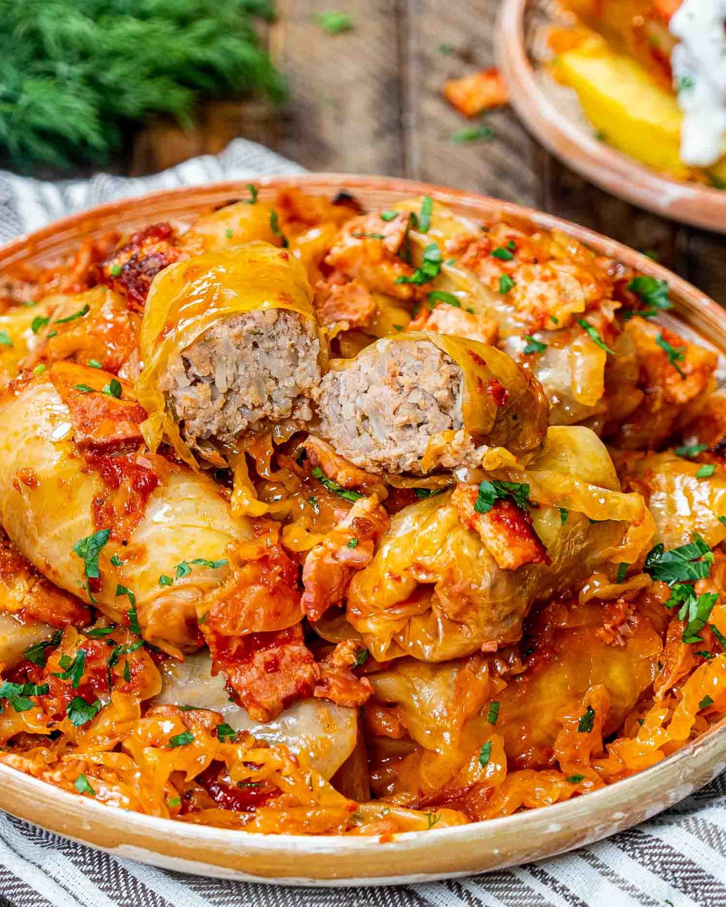

Sarmale

Ingredients:
For the filling:
-
500g ground pork (you can also mix pork with beef or even use lamb)
- 100g smoked bacon (optional for extra flavor)
- 1 large onion, finely chopped
- 100g uncooked rice
- 1 egg (to bind the filling)
- 2 tablespoons tomato paste or 100ml tomato sauce
- Salt and pepper to taste
- 1 teaspoon paprika (optional)
- 1 teaspoon dried thyme
- Fresh or dried dill (optional)
For the cabbage:
-
1 large pickled cabbage (fermented/sour cabbage) or 2 small ones Note:
If you use fresh cabbage, boil it for 5-10 minutes to soften the leaves.
- 500g sauerkraut (optional, for layering between the rolls)
For the pot:
- 3-4 bay leaves
- 200g smoked sausages (optional)
- 200ml tomato juice or tomato paste diluted with water
- Water or stock (enough to cover the rolls in the pot)
Instructions:
1. Prepare the cabbage:
- If using pickled cabbage, rinse the leaves to remove excess salt.
-
Carefully separate the cabbage leaves, cutting out the thick central
vein from each leaf to make rolling easier.
- If the leaves are too large, cut them in half.
2. Prepare the filling:
-
In a pan, sauté the finely chopped onion in a little oil until softened.
-
Add the rice and cook for another 2-3 minutes to lightly toast it.
-
In a large bowl, mix the ground pork, sautéed onion and rice, smoked
bacon, egg, tomato paste, thyme, paprika, salt, pepper, and dill.
Combine well.
3. Roll the cabbage:
-
Take a cabbage leaf, place a small amount of the meat mixture (around
1-2 tablespoons, depending on the size of the leaf) near the base, fold
in the sides, and roll tightly.
- Repeat until all the meat filling is used up.
4. Layer the sarmale:
-
In a large pot or Dutch oven, line the bottom with a few whole cabbage
leaves (to prevent the rolls from sticking).
- If using sauerkraut, scatter a layer over the cabbage leaves.
-
Arrange the cabbage rolls in layers, placing bay leaves and smoked
sausage (if using) between the layers.
-
Once all the rolls are in the pot, pour the tomato juice or diluted
tomato paste over the rolls, and add enough water or stock to cover
them.
5. Cook the sarmale:
- Bring the pot to a simmer on the stove.
-
Once simmering, reduce the heat to low, cover, and let it cook for 2 to
3 hours. Check periodically to ensure there's enough liquid. Add water
if needed.
-
For a more intense flavor, you can cook the sarmale in the oven at 170°C
(340°F) for 2-3 hours after simmering for 30 minutes on the stove.
6. Serve:
Sarmale are often served with sour cream on the side and a chunk of crusty
bread or polenta (mămăligă).
Enjoy!